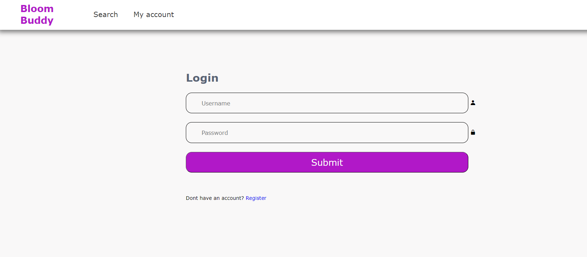
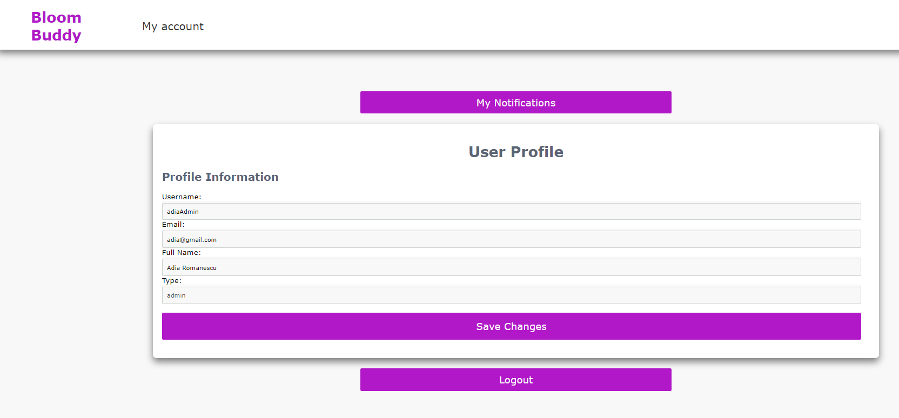

The presented software product, titled Web Garden, allows users to use a wide variety of functionalities.
The main purpose of the project, is to create a platform, that allows the users to buy and sell flowers, quickly and securely.
The user can create an account on our platform, which will allow him to participate in the flower market, and buy or sell any avaliable amount of flowers.
The website also allows users to manage their own garden, and to determine which flowers are still growing, and which are ready for cultivation and selling.
The stage of development of the flowers is determined based on the color saturation, obtained after analyzing the images of the garden, obtained from sensors or cameras, placed around it by the user.
Users will get email and browser notifications, when flowers become ready for cultivation and selling, and when orders are placed for the flowers they sell.
The notifications can be viewed in the user's email, and also on our website.
1.2 Target Audience
Our product is intended for people that are directly involved in the flower market, that need to sell or buy flowers as efficiently as possible, and who can use some help with growing flowers and gardening.
Casual users, that just ocasionally need to buy some flowers, are also welcome on our website, which provides easy-to-use and efficient interfaces, which helps them find the best prices for any flower they may need.
2. Description
2.1 Product perspective
Web Garden is a novel, self-contained, stand-alone product that is available to users online, intended to connect customers and sellers on the flower-market, and to help horticulturists in managing their garden.
2.2 Functionality
The presented product offers users the following functionalities:
login/logout
sign up
follow the development of flowers
order flowers
sell flowers
receive notifications on the current weather and the state of the flowers
receive email with order details
2.3 Environment
This is a web application that can be accessed through any of the widely and freely available browsers (Chrome, Firefox, Opera, Safari, etc.). As a result, the product runs independent of the operating system, and so it can be accessed by Windows, Linux or MacOS users.
There are no known conflicts with any other application on a user's computer.
2.4 Development Constraints
This application has been written entirely in HTML, CSS and Javascript. On the server side, it uses Node.JS for handling client requests.
It does not use any frameworks.
2.5 Documentation
The current document has the role of user documentation. It can be accessed on the github repository of our product.
2.6 Assumptions
This application is dependent on the current Web Technologies standards. It also depends on the Node.JS technology.
Issues with these technologies can reflect upon the functioning of our website.
2.7 Architecture
3. Interface requirements
3.1 User Interfaces
Index page
This is the first page a user will see when accessing the website. From here, the user can go to any other page, via the menu.
This page is responsible for listing all the available products on the website.
Login page

This is the page used to log into an user's account. The required fields for logging in are the username and the password. There is also a checkbox for the user to specify that their credentials should be stored locally.
In case the user is not registered, they can click on the "Register" link, which will redirect them to the signup page.
Signup page
This is the page used to create an user account. The required fields are the username, the fullname, email, the password and a field for confirming the password. The email and the username must uniquely identify a user, so you cannot create multiple accounts with the same email address or the same username.
My account

This page can be used to check for notifications and edit your account information and settings.
If you are not logged in, after pressing the "My account" button in the upper menu, you will be redirected to a page, that allows you to either login, or create an account.
Vendor Home Page/My garden
This page is accessible to the vendor, and can be used to check the current status of your planted flowers. You can check each item's preferred environment by clicking on their attached button.
The user can also see the products which they offer for sale on this page.
Shopping cart
You can use this page in order to finish your purchase. There, you can review the total payment for buying the added flowers. Once an order is placed, an email is sent to the email address of the user, which states the items purchased, and the total price to pay for them.
Search page
This page allows you to find the products you are searching for, by name.
Notifications page
This page allows the user to view his notifications.
Administration Panel
This page is the home page, in the case when the autheticated user is the admin. This page contains 2 panels. One panel is responsible for managing the users that have created an account on the website, and the second panel is dedicated to managing the flowers which have been created on the website.
3.1 Software Interfaces
3.1 Communication Interfaces
3.1.1 Account Interface
For this interface, the following endpoints have been implemented: login, register and user/change.
They are responsible for managing the users accounts securely and provide assistance in managing the user accounts.
3.1.2 Account Interface
For this interface, the following endpoints have been implemented: vendor/products, vendor/delete, client/products, notlogged/products, vendor/products/movespecific, /sendorderdetails .
They are responsible for managing the products of the users, and retrieving information about the products.
3.1.3 Admin Interface
For this interface, the following endpoints have been implemented: admin/users .
They are responsible to help the administrator manage the website.
3.1.4 Notification Interface
For this interface, the following endpoints have been implemented: /user/notifications , /sensor/notifications.
They are responsible for generating notifications based on the information retrieved from the service, responsible for the information about the flowers, and accessing the information about the notifications of the users.
4. Development History
4.1 Mock-up stage
During the mock-up stage, we have developed mock-ups of the pages of the application.
This is an important step during the development of a product, for the reason that the process of technical implementation relies on and is lead by the sketches designed during this stage.
Some of them can be viewed below:
Figure 1: Sign Up form Mockup Figure 2: Shopping Cart Mockup Figure 3: "My Notifications" Mockup Figure 3: "My Garden" Mockup
4.2 Front-End Development stage
4.2.1 Product Cards
During the front end development stage, an automated solution for generating and displaying product/user cards has been implemented.
4.2.2 Shopping Cart Implementation
The logic behind the shopping cart, relies mainly on the front-end part of our project. It has been implemented in such a manner, that it is persistent, while the user is logged. The prodduct cart can be updated by adding more items from the list of products. The quantity of a specific item can be increased, decreased, or the item can be completely removed from the current shopping cart option.
Also, after the order is placed, an email is sent to the address of the current logged user, about the products he has ordered.
4.2.3 Role-Separation
The key feature which relies on the front end of our application, is the role-separation.
A user can have some possible roles, which he can choose during the registration process (client/vendor).
When starting the application, the default role is set to notlogged.
In the dataBase, there exists a special user, which has the role 'admin'. This is the user, which, while logged in, can manage the application from a panel on the front-end.
The role separation affects such properties as: the pages where links lead, what functionalities are available to the user, what types of notification a user can receive.
4.3 Back-End Development stage
4.3.1 Database
For this project, we have used MongoDB as the database. Unlike Oracle, Postgres or MySql, MongoDB is a non-relational database, which stores data as documents rather than tables.
We have decided to use this specific database manager, because we were interested in learning how to work with a new type of databases, as we have worked with relational databases at 3 other courses during the last semesters.
In order to access and use the database via node.js, we have used the Mongoose library.
In our MongoDB database, we have 3 collections: users/products and notifications. Their names are suggestive, regarding the data that is stored inside them.
Figure 4: An overview of the MongoDB database (the 'products' collection).
4.3.1 Controllers
The application server, had
Figure 4: An overview of the MongoDB database (the 'products' collection).
5. System features
5.1 Login/Logout
The website allows a user to log in and out of the application. Having an account is mandatory in order to access to full suite of features in the app. In order to login, the user must provide their email or username, together with the password associated with their account. Also, as a security measure, the passwords are stored as hashs in the database.
5.2 Sign Up
In order to sign up, a client who is not already a registered user must navigate to the Sign Up page and introduce the following details: email address, full name, username and password. The user also chooses a role for using the website: client or vendor, which is unchangeable. Moreover, the login/register input data is validated in order to weaken brute-force vulnerabilities probabilities.
5.3 Follow the development of flowers
A user logged in as vendor has access to its plants. The user can view its own plants, for each stage ('planted', 'grown' or 'for sale'). Each plant gets registered in the database. A vendor can add plants by a form with relevant inputs such as water, soil, temperature, name and image.
5.4 Order flowers
A logged in client can 'Add to cart' any flower for sale reported by any vendor. After proceeding with the shopping cart, the user gets an email with the details of the order.
5.5 Sell flowers
In order to sell a flower, the logged-in user (with a 'vendor' role) can either add a plant directly for sale or can modify the state of a grown plants (or all grown plants) to being for sale. The product page is automatically modified after each 'Move to sale' operation.
5.6 Receive notifications about your flowers
All notifications are received by a sensor microservice, at any time and updates the notifications data base accordingly.
The notification page displays data from the notifications database, for a 'vendor' user, all notifications regarding its products are displayed, while for a 'client' user, the notification displayed are only the ones for favorite products (option available within a 'Add to favorites' button for each product and stored in the local storage).
6. Non-functional requirements
6.1 Performance Requirements
The site and all its pages is responsive on all main types of display resolutions, whether it's Phone, Tablet, Laptop or Desktop. Obscure devices such as your bootleg wireless earphones with a display on the case and internet access do not count.
6.2 Security Requirements
Passwords will not be stored in the database, but rather their hashed version.
Every information entered by the user shall follow GDPR regulations.
For injection prevention (SQL, OS or XSS), we chose to have whitelists and blacklists configured for the project. The white list is configured by a python script outside the project environment, while the blacklist is configured to contain all back end development files.
Before sending a login/register requests that queries the database, the client runs a input validator in order to prevent as many special characters common in XSS or SQL as possible (e.g. '<','>','(',')',';')
Authorization is assured by using JWTs during requests that manipulate user data.